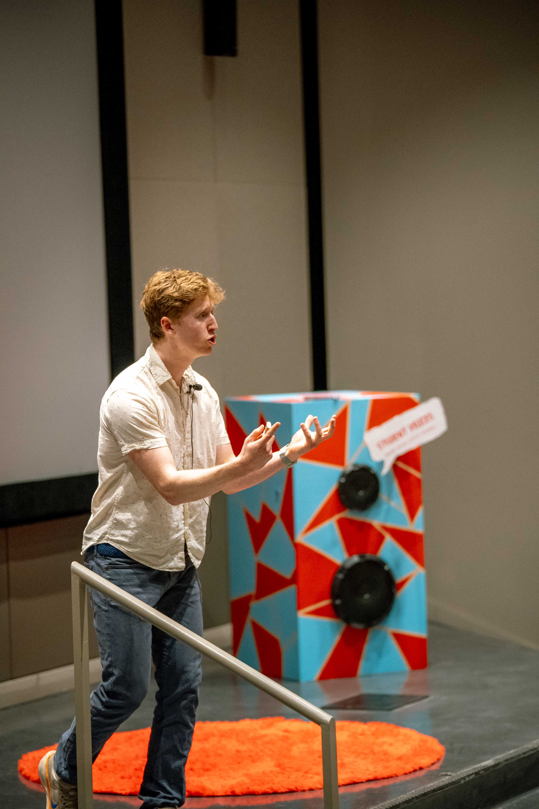

Our speaking events aren't presentations. They're conversations — led by people the same age as your students, about something every student is already living.
Why It Lands
Most talks on phones start with the phone — and students tune out because it feels like blame. We start earlier: with the free afternoons and third places and unstructured time that disappeared first. By the time we get to the phone, the room is already with us.
That's what makes it different.
Inside the Event
We open with a story — something personal and true — that earns laughter before it earns anything else. The goal in the first five minutes is simple: make the room feel safe enough to be honest.
Then we go back — before the phone. We talk about the spaces childhood used to have, the free play and third places and boredom that shaped who people became. And we ask what happened to them. By the time we get to phones, students aren't defensive. They're curious.
We ask real questions. We leave real space for silence. We close with a call toward something — not a command, not a list of rules. Just an invitation to look at things differently.

See It in Action
A short clip from a recent campus event. Hit play, then decide.
Filmed live on campus — real students, real conversation.
What Makes It Work
Our talks are built around our own childhoods alongside the consensus research on digital wellness. Try finding other assemblies interweaving Beyonce reels and anxiety trendlines. We couldn't, so we made them.
Program Options
45–60 min
Our signature speaking event — personal narrative, key research, audience interaction, and a closing reflection. Best for campus-wide events, student union bookings, and large residence hall sessions. Works in rooms of 50–500 students.
75–90 min
An expanded version that includes extended Q&A, small-group discussion prompts, and more time for audience reflection. Best for wellness-focused programming, mental health week events, and academic class settings.
2–2.5 hrs
The full experience — screen Disconnected, then transition into a live conversation with the filmmakers. The film does the emotional groundwork; the talk opens the room for real dialogue. Our most requested format.
50–75 min
A more intimate, discussion-heavy format designed for courses in communication, psychology, media studies, public health, or student development. Includes framing for academic discussion.
Full Day
Schedule multiple sessions across departments, residence halls, or student organizations in a single campus visit. Most cost-effective option for campuses that want broad reach.
Tailored to Your Campus
We'll work with you to shape an event that fits your specific student population, programming context, and goals. Reach out and we'll design something together.
Campus Responses
"Students who never engage with wellness events showed up — and stayed afterward to keep talking. That never happens."
Mid-size Liberal Arts College
"It's the rare event where I watched the entire audience put their phones away — voluntarily — for an hour and a half. It just happened naturally."
Large State University
"The peer connection is real. My students didn't feel talked at — they felt understood. That made all the difference."
Private University, East Coast
After the Event
What we consistently hear is that students keep talking after the event ends. In the hallway, at dinner, that night in the group chat. That's the sign something real happened.
We're not looking for a single night. We want to be a catalyst for something ongoing — a shift in how students relate to their devices, their time, and each other.
Bring This to Your CampusLogistics
We've designed the booking process to be easy for student life staff and programming boards working with standard campus scheduling constraints.
View Full Booking Details